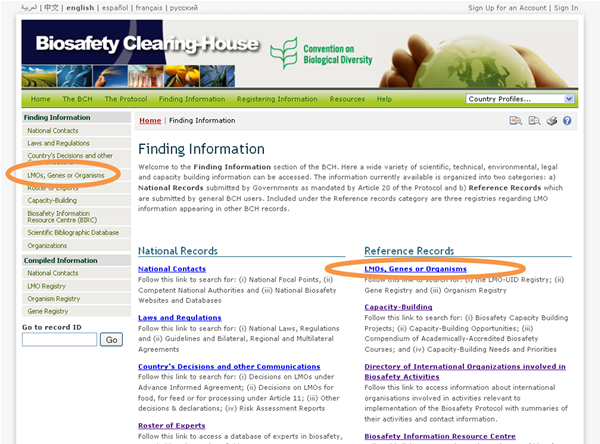
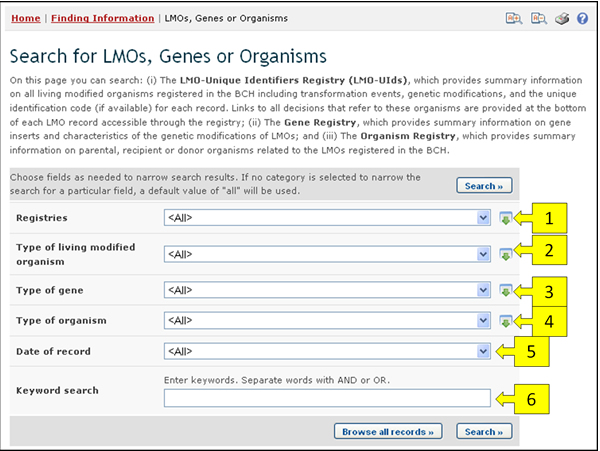

URL: http://bch.cbd.int/database/organisms/
The Secretariat maintains three registries in the BCH to assist users to access information regarding LMOs as follows:
-
LMO Registry;
-
Gene Registry;
-
Organism Registry.
Each registry contains records with information about LMOs, Genes and Organisms. They can be accessed from the search pages for information about LMOs, Genes or Organisms, which can be found in the Finding Information drop down menu on the navigation bar, in the link in the left hand menu of the Finding Information page, or in the LMOs, Genes or Organisms link in the text of that page.
These registries can be accessed from the search pages explained in this section or can also be used in the form of Compiled Information, which is covered in “Compiled Information”.

On the Search for LMOs, Genes or Organisms page there are several search criteria boxes:
-
Registries: Selection list field for selecting the registries in which to search for information. This allows the user to select what types of information (LMOs, Genes or Organisms) are to be included in the search results.
-
Type of living modified organism: Additional search criteria field to add more criteria regarding LMOs to narrow the search results. Only records containing or referencing the specified LMO criteria will be returned. By selecting items in this list, the user can make the following new fields appear:
-
Unique Identifier: Selection list field to specify the unique identifier of the LMO.
-
LMO Identity: Keyword field to search for keywords in the identity part of the LMO records
-
Technique: Selection list to narrow search results to records which match the selected techniques.
-
-
Type of gene: Additional search criteria field to add more criteria regarding genes to narrow the search results. Only records containing or referencing the specified gene criteria will be returned. Selecting items in this list will make the following new fields appear:
-
Gene: Selection list to select a specific gene name.
-
Introduced or modified traits: Selection list to narrow the search results to records which match the selected options.
-
-
Type of organism: Additional search criteria field to add more criteria regarding organisms to narrow the search results. Only records containing or referencing the specified organism criteria will be returned. Selecting items in this list will make the following new fields appear:
-
Parental organism (common name): Selection list for specifying an organism by its common name.
-
Parental organism (scientific name): Selection list for specifying an organism by its scientific name.
-
-
Date of record: Date field for narrowing the search results to a time interval.
-
Keyword search: Keyword field for narrowing the results by keyword.
See “Using the search pages” to learn about types of fields and their operation.
